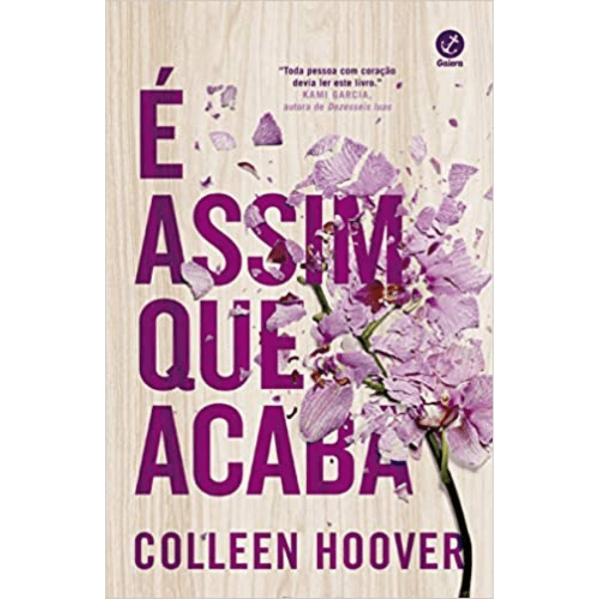
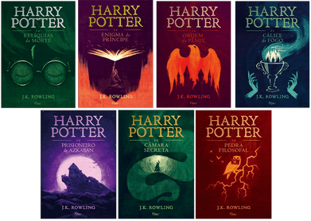
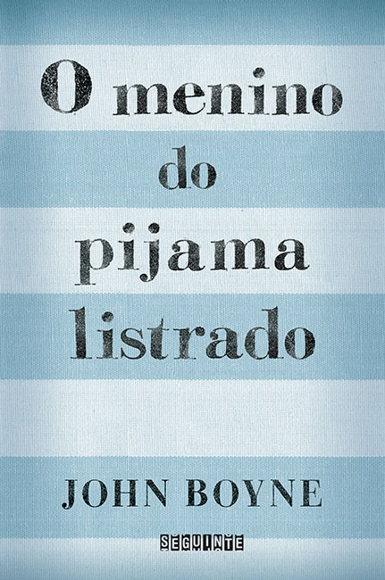
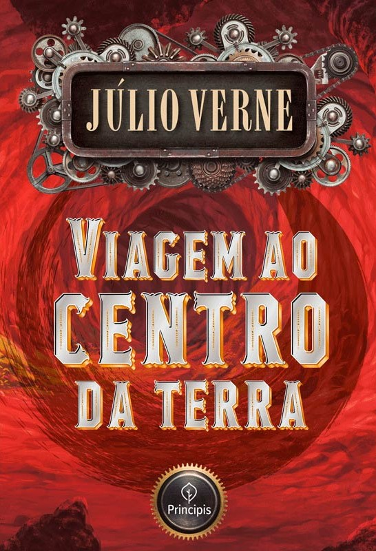

Esse livro tem uma temática um tanto quanto forte, ja que aborda temas como estupro e violência doméstica, porém, ao mesmo tempo que temos uma lado feio da história temos uma parte bonita onde se descobrem e se redescobrem amores da adolescência. Temos uma protagonista muito forte chamada Lily, e todos os personagens são extremamente bem escritos.

Essa obra de arte já pode ser considerada como um clássico, não? O livro conta a tragetória do nosso protagonista (e herói) Harry Potter, desde seu nascimento até sua vida adulta, com vários personagens maravilhosos e cativantes, assim como vilões e anti-heróis. Cada detalhe muito bem escrito, descrições muito boas. Enfim os livros são perfeitos e os queridinhos de muita gente, além de trazerem muitas mensagens e lições de moral que podem se levar para a vida.
O livro se passa na época do holocausto, alemães x judeus. A história é extremamante tocante e triste. O escritor nos apresenta uma amizade improvável entre um judeu e o filho de um dos generais, uma amizade que começa com um pouco de medo e receio, mas que logo se tornam amigos para uma vida inteira, porém algo interrompe isso...
A história desse livro é muito boa, foi o primeiro livro de ficção científica que eu li. Confesso que eu demorei para ler ele por conta da escrita, ela é bem cansativa pois é mais entiga (esse o motivo das 3 estrelas). Mas num geral é uma história muito boa, personagens desenvolvidos, um romance escondido, lugares sendo descobertos, novas amizades, enfim um livro muito bom mas que não gostei muito da escrita por ser um livro antigo.
